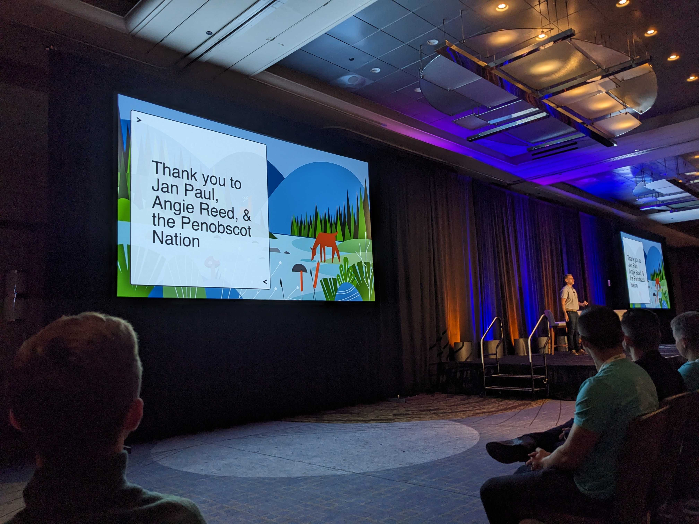
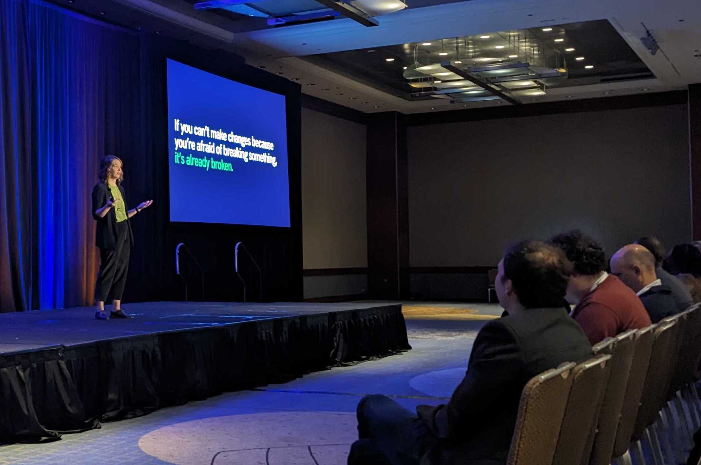
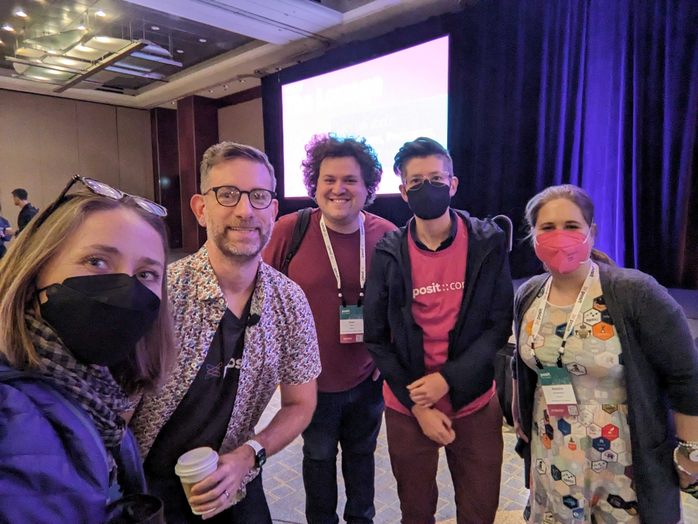

![]()

Last week I’ve been at #PositConf2023 in Chicago, reconnecting with the open data science community through folks from R-Ladies, Posit, and the greater #rstats and python community. I gave a talk, sharing about documenting things and how intentional approaches are helping teams tackle hard challenges and change organizational culture. This post is a light debrief of highlights from the Conference, as well as a short overview of my talk. Big disclaimer! There was way more awesomeness (both tech and people!) and this absolutely doesn’t capture it all. Definitely look out for other great talks about features and real-world teams using Shiny (with R and Python), tidyverse, Quarto, and much much more.
Quick links:
- posit::conf YouTube - recording of the talk and in a playlist from the Conference
- Documenting things: openly for future us - my slides
- Other blog summaries from the community:
posit::conf(2023) - Go tell your roommate
When we debrief following Openscapes events, we try to capture one thing that we would go tell our housemate/roommate (we developed this working from home during the pandemic; it could also be your coworker or the first person nearby). These “go tell your roommate” debriefs are often not a summary or synthesis, but moments or details or feelings that really stand out. They are little micro-stories we can amplify. So here are some of these “roommate moments” from posit::conf that I wanted to share.
Penobscot Indian Nation opening video
The whole conference kicked off with a beautiful and inspiring video with the Penobscot Indian Nation. It was narrated by Jan Paul and told the story of the pollution of the Penobscot River and how water quality monitoring and data analysis by Jan and her colleagues are helping turn this around. Seeing this as the kick-off for the conference and meeting Jan was a highlight of the whole conference.
The posit::conf stage with Hadley Wickham showing thanks to Jan Paul, Angie Reed & the Penobscot Indian Nation for the conference kickoff
I also met Jan Paul’s colleague Angie Reed in person (!!!); Angie was a 2021 Openscapes Champion with the Tribes and the Exchange Network team and doing big work around data science skills across Tribes. (We met because Ben Marwick specifically connected us; I know Ben through rOpenSci). The Tribal Exchange Network is looking for folks to sign up and help this community with R/Python support!
R-Ladies community
One of my absolute favorite talks was by Riva Quiroga: Sustainable Growth of Global Communities: R-Ladies’ Next Ten Years. Riva shared the story of how a large global community has changed its leadership seamlessly and inclusively with deep thought and intention. As part of this, they upgraded their membership system in a cost-effective and code-forward approach, while continuing to support the community throughout. They shared how the transition from manually entering member bios for the website from a Google Form to switching to Airtable that automatically updates the website using a scheduled cron job and GitHub Action was very interesting to me, and something we can learn from.
R-Ladies is a worldwide organization whose mission is to promote gender diversity in the R community. One way I have felt this is when R-Ladies band together to sit in the front rows of each others’ talks, and if there is ever a question of which talk to go to, you choose an R-Ladies talk and support them for being there. R-Ladies has not only changed individual lives and career paths but the R community as a whole. I really liked when Mo Mowinckel emphasized this at the RLadies Global Meetup on Thursday.
I spoke with several people for whom this was their first posit::conf who commented how many women were at a tech conference – and how connected they were. That doesn’t happen by accident - that is the result of the unrelenting and huge amount of work of many awesome women and gender minorities in the R community, and so many awesome allies and supporters from every aspect. This includes Posit, who pays for the room for us to all gather at the end of the conference (and supported all 5 people from RLadies Leadership to be in the same place for the first time - see DrMowinckel’s post! I am so proud to be a part of R-Ladies, and want to increase my involvement since I and the other co-founders of our R-Ladies Santa Barbara Chapter passed on to new leadership in early 2020.

Selfie: Deepsha Menghani, Julie Lowndes, Yanina Bellini Saibene
I got to meet Yanina Bellini Saibene in person! Yani is the Community Manager at rOpenSci, and on the leadership team of R-Ladies and The Carpentries. We talked about how important it is to be active across these different communities and how we collaborate and not complete, and this is something that we will continue strengthening in the years to come. She talked about all of the amazing R packages that rOpenSci Champions are developing, and that teams often want to join together as Champions to think about package maintenance as a team. I wonder if this will be something for the NASA- and NOAA-Openscapes teams in the future.

Selfie: Monica Gerber, Julie Lowndes, Hannah Frick
I really appreciated talking with Silvia Canelón and Millie Symns throughout the conference. Millie gave a fantastic talk about her journey from becoming an observer to contributor in her talk Side effects of blogging for a year. Hannah Frick is always a fave person to see, and has been part of the R-Ladies’ global leadership for a long time. I’m excited to hear more about her work with LatinR and more; she chaired several sessions and we had brief hi’s in between.
I also really liked Liz Roten’s talk “There is an I in Team”, sharing how to onboard folks to your data science team and shared workflows. There were many other great talks by R-Ladies that I saw throughout the week and am excited to watch the ones I missed, including SherAaron Hurt from the Carpentries’s R you Ready! talk.
Quarto features and partnerships
There are new exciting features and partnerships with Quarto!
Mine Çetinkaya-Rundel talked about Reproducible manuscripts with Quarto and a new partnership with the American Geophysical Union (AGU) to make this happen. This upends the idea that the PDF is the main element for publishing: it’s: “an end-to-end scholarly publishing workflow that treats Jupyter and Quarto notebooks as a primary element of the scientific record” and “A publication process that elevates transparent and reproducible work by authors, where data and software, together with narrative, are documented, shared, and archived.” Quarto can already use hypothesis.io for commenting, which helps you track-changes when collaborating in Quarto docs.
Charlotte Wickham shared about new features coming in the next Quarto release (by Christmas). I’m excited about code annotation, and embedding the output of one notebook into another (with provenance), and the JupyterLab extension that will help the NASA Mentors edit Quarto documents in our 2i2c JupyterHub. I also spoke with J.J. Allaire and the Quarto developer team about some specific features that would help NASA Openscapes Mentors build a single Quarto book with notebooks from multiple repositories, and our plan is to collaborate soon to make this happen, which is super awesome.
There are a lot of other great features and examples with Quarto that I will continue to learn about post conf.
Black hair and data science have more in common than you think
Kari Jordan is Executive Director of The Carpentries. Her talk about Black hair and data science have more in common than you think was really thought-provoking. Kari created a fabulous table categorizing hair type and data type and the tools and workflows required. I have a long way to learn from communities of people who are different from me, and I really appreciated this chance with Kari. This was an intimate and brave talk, one that Kari said she adapted for a Posit audience since she first gave it at Spelman College, a historically Black liberal arts college for women in Atlanta, Georgia. I also loved that Kari’s niece attended sessions with Kari and Sher! throughout the week!
webR for reproducibility & teaching
James Balamuta presented about webR, and demonstrated how “this approach can transform static Quarto documents into dynamic examples by leveraging webR’s capabilities through standard Quarto code cells, enabling real-time execution of R code and dynamic display of results. Our approach empowers educators and researchers alike to harness the power of interactivity and reproducibility for enhanced learning and research experiences.” James gave Eli Holmes from NOAA Fisheries a shoutout for her early feedback and testing, which delighted me.
Show, don’t tell
The keynotes this year were all really super. I’m going to focus on two:
Elaine McVey emphasized “show, don’t tell” as a strategy for getting buy-in for what you need as a data scientist. She walked through it as a cyclical process, sharing how often data scientists are hired within a team but not given access to data to do their jobs. Building relationships to understand how things work and to build trust is part of everyone being able to do their jobs.

Elaine McVey’s cyclical process emphasizing a “show, don’t tell” strategy
Kara Woo gave a beautiful keynote, likening the walking through the halls as tending a garden, and shared how to take what we learn and feel through this garden back to our home places. One quote that stood out to me was “if you can’t make changes because you’re afraid of breaking something, it’s already broken”.

Kara Woo giving her keynote
Amelia McNamara, Hannah Frick, Sean Kross, Hadley Wickham and I had a mini #rstats nerd huddle between excellent keynotes by Kara Woo and JD Long:

Selfie: Julie Lowndes, Hadley Wickham, Sean Kross, Hannah Frick, Amelia McNamara
NOAA Fisheries and Fred Hutch Cancer Center
Sean Kross is a Data Staff Scientist at the Fred Hutch Data Science Lab. His talk was about the Tidy Data Tutor that he developed to help visualize tidyverse operations. He framed this in a bigger idea that code is data, which is something I’d never heard about before. Holy Moly Sean, Tidy Data Tutor has 50K users across 150 countries! And this growth is over maybe 2 years? Amazing. And speaks to its usefulness. Also, this paper Tools for Analyzing R Code the Tidy Way by Sean, Jeff Leek, and Lucy D’Agostino McGowan is now on my list to read! Sean Kross is such a hero of mine, one of the early friendly people that made me feel like I belonged in the R community, and I’m so thrilled that we’ve been collaborating for nearly 5 years. He was part of our very first Champions Cohort, when he was exploring studying Openscapes as part of his PhD. He has also built our kyber R package that automates a lot of our infrastructure to lead Champions Cohorts. And, now we’re leading the very first Champions Cohort at Fred Hutch, together with Stefanie Butland and Sean’s colleague (and R Lady) Monica Gerber. It was wonderful to see Sean and Monica in person! Sean also gave gave me a swirl sticker which I have coveted for a long time.

NOAA Fisheries Marine Mammal Lab folks with Julie and Sean.
And, folks from the NOAA Fisheries Marine Mammal Lab were there! This is a group I’ve worked with for years now, and it was wonderful to meet in person. I remember first conversations with Josh London about how we could work together at previous RStudio conferences, and now it’s happening! We had dinner together with Sean Kross, which was awesome since all of them are based in Seattle.
Much much more.
So many hallway conversations and hugs. Davis Vaughn shared about updates to dplyr, and found me early at the Reception to ask if I needed any help with my slides. Davis has come to the rescue at both my RStudio and useR! keynotes to help with xaringan and Quarto slide sharing in the last moment of need. I so appreciate him! And fun fact: we first met because he saw my computer with stickers in the airport in London on our way to Toulouse in 2019 and came to say hi.
Ted Laderas spoke about burnout experienced by community organizers, which is real. He suggested asking for help and not taking it all on yourself as a few strategies to continue to find joy and learning with your community.
I love talking with Andy Teucher and Steph Hazlitt and Nic Crane and learning about their work in and out of industry. And also Ciera Martinez, who was a Mozilla fellow with me and I got to not only meet her adorable toddler but also hear about really big work in biodiversity and data science that she’s doing from UC Berkeley.
There’s never enough time to talk to everyone and learn all the things, and that was certainly true this time. Looking forward to staying connected (seems like some combination of Mastodon & Bluesky) and seeing folks in Seattle in 2024!
Documenting things
OK, a super-brief run-down of my talk:
The purpose of the talk was to give advice about how to document things effectively & share stories of how documentation can be visible and valued — and help teams be efficient, productive, and less lonely. I presented this in 2 parts. First, a 5-min lightning talk with practical tips, inspired by Jenny Bryan’s Naming Files 💙; Jenny has been a huge teacher, inspiration, and role model of how to document things and share to support others, and this is an attempt to follow suit. Second, 10-min of stories with reusable strategies, from NASA Openscapes & beyond. Something that is critical to all of this is to have technical and social infrastructure, i.e. time and support to write documentation as part of your job. There is a TL;DR in the form of a preprint editorial co-authored by Openscapes Mentors across NASA, NOAA, EPA, and academia.
How to document things
Have a place
Have an audience in mind
Design for readability & accessibility
Walk through my slides for the details and tips!
Stories
I shared stories about growing the NASA Openscapes Mentors community, first focusing on how documenting things helped staff collaborate from across NASA Data Centers to co-develop teaching resources to support researchers using NASA Earthdata in the Cloud. This documentation helped onboard others as contributors in three ways.

Slide from my talk. NASA-Openscapes project website, Earthdata Cloud Cookbook, Openscapes Approach Guide.
Further, putting a focus on documentation has enabled NOAA Fisheries, California Water Boards, and others to reuse this approach. We wrote an editorial we have submitted to Nature sharing how this requires an investment in both technical and social infrastructure. We encourage making time and advocating for time to support each other in these efforts.

Slide from my talk. Illustration by Adyan Rios and Su Kim, NOAA Fisheries.
Together with this awesome community we are building technical and social infrastructure that we can leverage to shift institutional culture and develop climate solutions with Open Science!
Citation
BibTeX citation:
@online{lowndes2023,
author = {Lowndes, Julie},
title = {Documenting Things \& {Posit} {Conference} {Debrief}},
date = {2023-09-27},
url = {https://openscapes.org/blog/2023-09-27},
langid = {en}
}
For attribution, please cite this work as:
Lowndes, Julie. 2023. “Documenting Things & Posit Conference
Debrief.” September 27, 2023. https://openscapes.org/blog/2023-09-27.